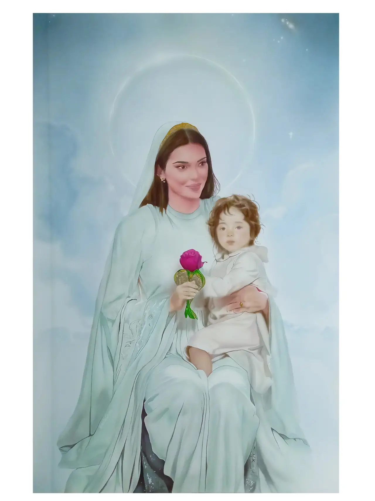
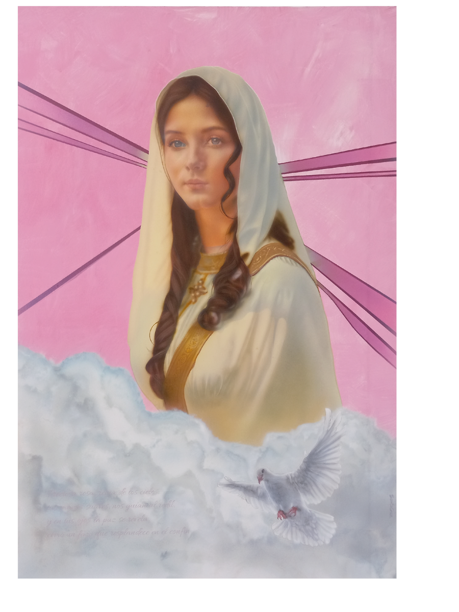
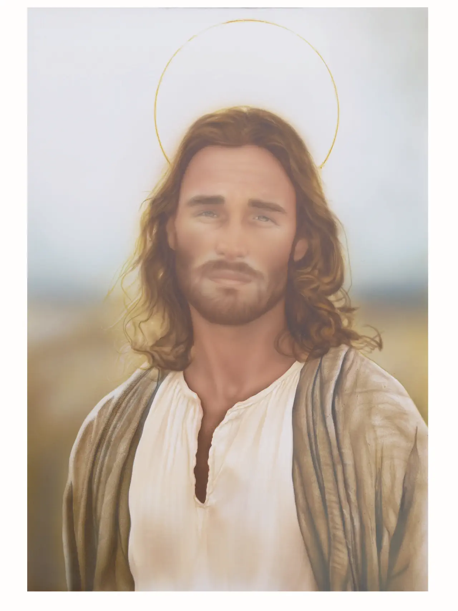
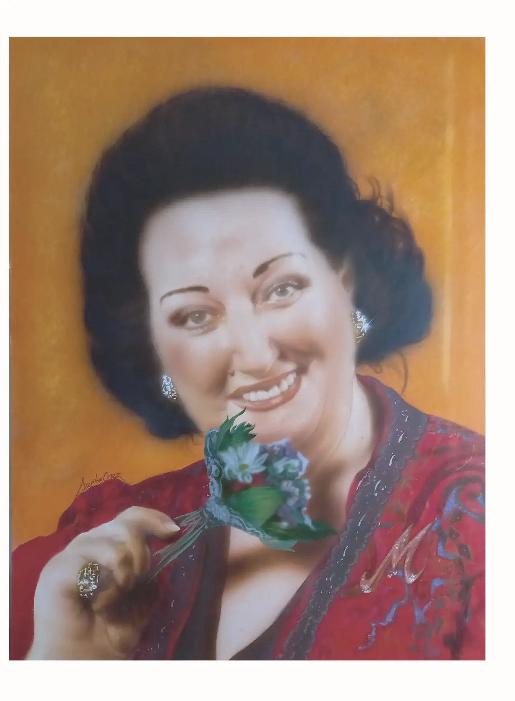
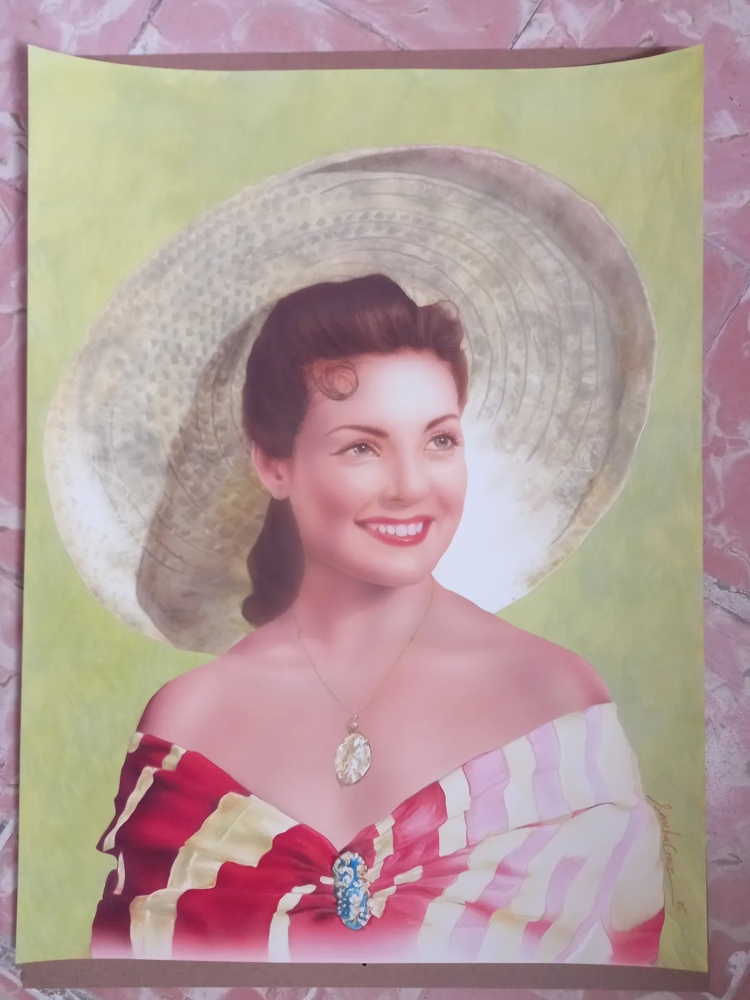
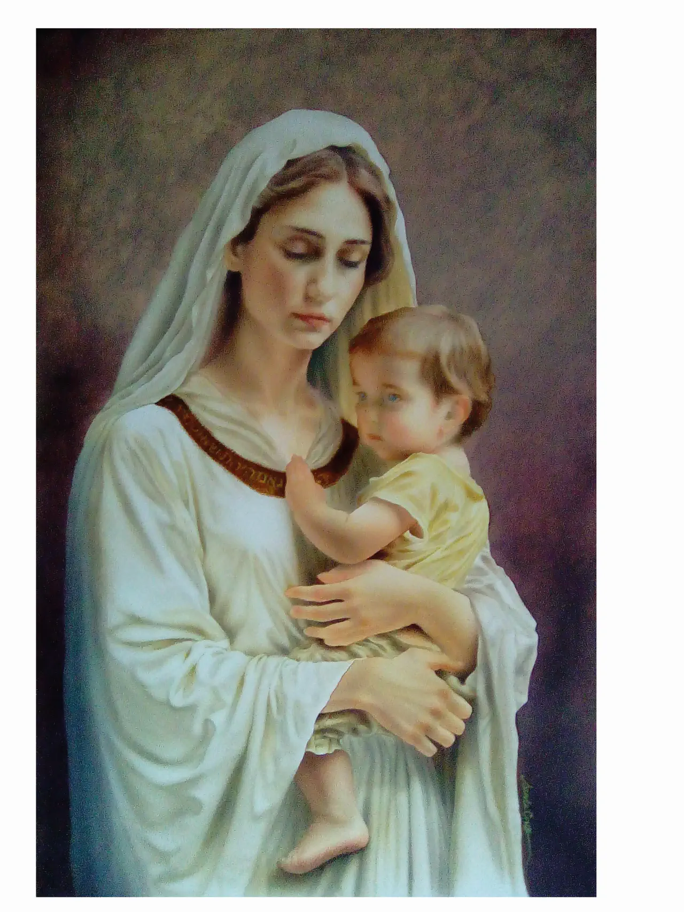
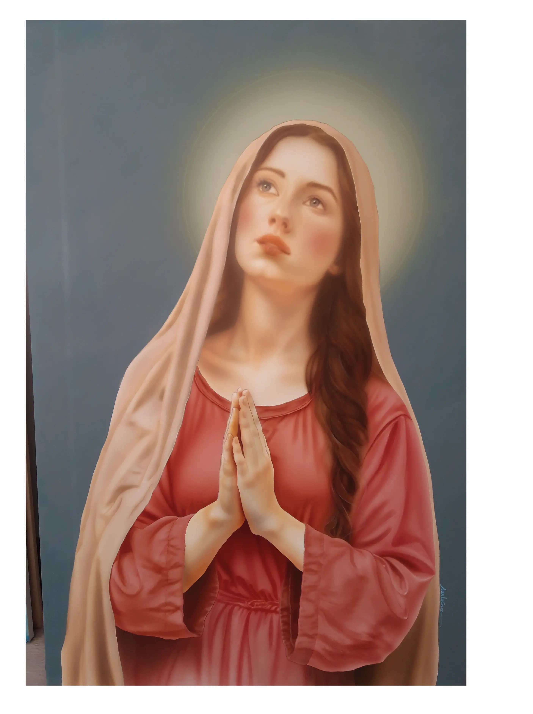

A la venta
Obras disponibles para comprar.

590€ - Cielo y Tierra
60 x 90cm
Aerografo sobre plancha de cartón yeso
2024

560€ - Preciosa rosa, Reina de los Cielos
60 x 90cm
Aerografo sobre plancha de cartón yeso
2024

570 - Jesús de Nazareth
50 x 70cm
Aerografo sobre plancha de cartón yeso
2024

630 - Montserrat
50 x 65cm
Aerografo sobre plancha de cartón yeso
2024

280€ - México
50 x 70cm
Aerografo sobre plancha de cartón yeso
2024

270€ - Primavera
50 x 65cm
Aerografo y lápices de color sobre lámina de papel Schoeller
2024

760€ - Madre de luz
60 x 90cm
Aerografo sobre plancha de cartón yeso
2025

730€ - Madre de la esperanza
60 x 90cm
Aerografo y acrílico sobre plancha de cartón yeso
2026
Encargos personalizados
¿Tienes una idea en mente? ¿Un retrato, una moto, unas llantas, un casco con historia?
Démosle forma.
Todo encargo comienza con una conversación.
“Cada pieza que se pinta es única. Lleva tu esencia, tu historia, tu energía.”
Escríbeme sin compromiso. Juntos definiremos el diseño, los detalles y tiempos de entrega.
También acepto ideas para regalos especiales: cumpleaños, aniversarios o fechas señaladas.
Contacto
Escoge tu método preferido para ponerte en contacto conmigo:

Pintado de Retratos

Pintado de Cascos

Lacado de Faros

Pintado de Llantas